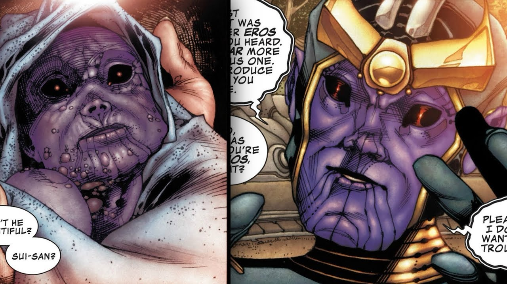
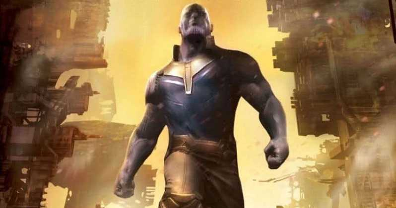
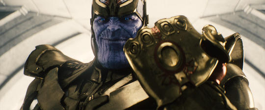
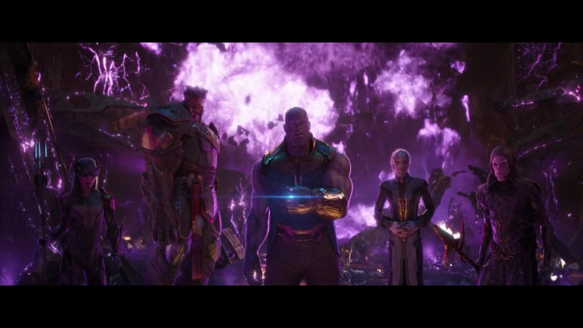
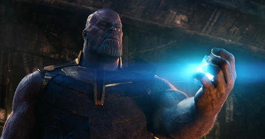
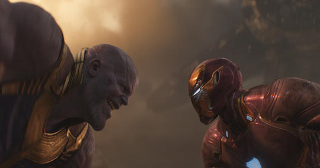
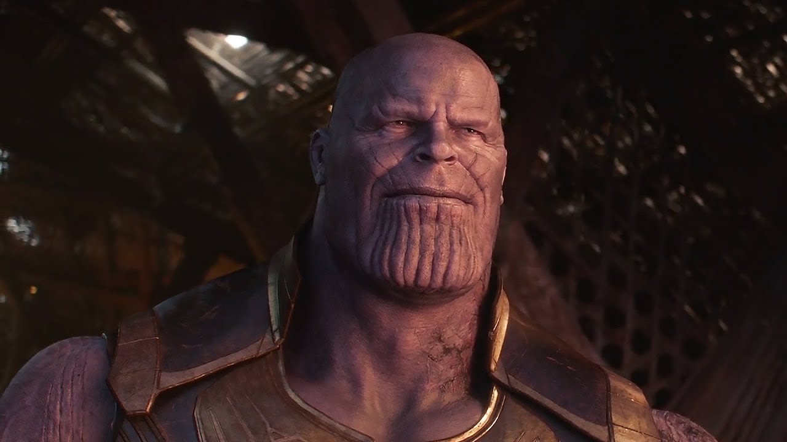

Thanos was one of the last sons of A'Lars, progenitor of the second colony of Eternals on Titan, and Sui-San, the last survivor of the original
settlement of Eternals in this moon.
He was born with purple, hide-like skin and a massive body due to his Deviant Syndrome.
The very first time his mother laid her eyes on the baby, she was driven mad and tried to kill him.

Despite his unusual appearance and introvert nature, Thanos was well accepted by his peers.
He was an mild-mannered intellectual that dreamed of becoming a scientist like his neglectful father.
However, signs of his true nature started to creep up early on.
For instance, he liked to draw dead animals despite vomiting at the prospect of performing a dissection.
Thanos' life reached a tipping point when a mysterious girl convinced him to explore with his friends a dangerous cave to overcome his fear of killing.
A cave-in separated Thanos from his friends for three days, during which he refused to even think of murdering the inoffensive creatures that lurked
underground for sustenance.
When he found his friends, they had been killed by the animals living in the caves.
After Thanos returned to society, the same girl convinced him to go back to the cave and slaughter the critters in revenge.
By the time he was a teenager, Thanos excelled academically and learned faster than he was taught. He began to vivisect creatures in secret in order
to gain knowledge while searching for an answer to his abnormal genetic makeup. The girl that had helped him overcome his fear of killing became his
confidante. Thanos' search for answers escalated into killing fellow Titanians, carrying out the first murders in the history of Titan.
Despite declaring that his first two murders were going to be the last, Thanos eventually killed again, and found out that he enjoyed it.
After murdering seventeen people in total, Thanos killed Sui-San in hopes of finding in her body the key to who he was, both spiritually and physically.
He left Titan afterwards, swore off killing, and found a menial job with a pirate crew with whom he explored the cosmos. As years went by, Thanos became
detached and unemotional. Then, Thanos returned to Titan in secret.

Thanos saw the danger his people were in from overpopulation and suggested a severe solution—the elimination of half the population,
at random and without prejudice, in order to make life better for the planet as a whole.
He was shunned as a madman, but his planet did indeed eventually die, lacking the resources needed to keep up with the demands.
Firmly believing that the universe at large was in the same danger as Titan, Thanos grew to power as a force bringing death and destruction
from planet to planet, with untold legions of soldiers and servants at his beck and call. Infamous for annihilating entire races in service of
depopulating what he believes to be an overcrowded universe, he most often works through surrogates to achieve his goals, but has been known to
take a personal hand in special circumstances.
More than once, Thanos took a child from a galactic species he’d decimated and raised them as his own. Some of these children have been tutored in the
arts of assassination and war, making them among the deadliest killers imaginable. Thanos has also given powerful artifacts to individuals who he believes
will use them to spread the cause of death in certain important spots among the galaxies.
Thanos went on to have a great interest in acquiring the Infinity Stones, six objects of immense power scattered throughout the universe, and has had the
Infinity Gauntlet built in order to harness their power.

Thanos does not seem to have any genuine friendships or close confidants, mainly interacting with beings under his thrall and command, along with those
he deems his children. For a while, he was often accompanied by a high-ranking servant referred to as the Other, an individual
who spoke for his master and was able to issue threats on Thanos’ behalf. The Other seemingly enjoyed a position that allowed him to deliver
unfortunate news to his master without apparent punishment, though Thanos also expressed no displeasure at his demise.
The assassin Gamora and warrior Nebula are raised as Thanos’ daughters after their respective races are targeted by the Titan. While Thanos seems
dismissive towards Nebula, expressing no qualms about torturing her, he believes he truly loves Gamora, hoping she will one day succeed him as ruler.
Eventually, both women break away from his abusive rearing to make their own way in the universe and become his opponents.
During his push to acquire the Infinity Stones, Thanos commands a powerful foursome of galactic assassins: Ebony Maw, Proxima Midnight, Corvus Glaive,
and Cull Obsidian, referred to as the Children of Thanos—to do his bidding across the galaxies. Totally devoted to their master, they hold an almost
religious fervor in serving Thanos and aiding him in gathering the Stones. When Thanos learns of Maw’s death, he expresses some regret over the loss.

Thanos directed the Other to make contact with Loki of Asgard to bequeath a special scepter to him that he might use to wreak havoc on Earth. When Loki’s
plan backfired and brought about not only an assemblage of the planet’s mightiest heroes to combat him as the Avengers, but also a nuclear weapon sent
back through a Chitauri wormhole, Thanos learned of Earth’s formidable defenses and seemed to be pleased at the thought of future engagement with them.
Afterward, Thanos directed Ronan’s mission to retrieve the powerful Orb and tasked Gamora and Nebula to aid him. Unfortunately for Thanos, all three
turned against him in the course of events that followed and he lost the Infinity Stone housed in the Orb. Sometime later, Nebula managed to get onboard
Thanos’ ship and nearly killed him, but he was able to capture her instead.
Thanos then increased his drive to gather all six Infinity Stones. After attacking the planet Xandar to snare the Power Stone from the Nova Corps,
he halted the space flight of the surviving Asgardians to take the Space Stone from Loki. From there Thanos travelled to Knowhere to wrest the Reality
Stone from the Collector, and was reunited with his adoptive daughter, Gamora.

Taking her with him, Thanos returned to his throne ship and revealed his ongoing torture of the imprisoned Nebula. This broke Gamora’s will and she
told Thanos that the Soul Stone could be found on the planet Vormir. Together, Thanos and Gamora traveled to Vormir and met the being responsible for
the Soul Stone’s caretaking, the Red Skull, who told Thanos he must sacrifice something he loved as a price to possess the stone. After being mocked
by Gamora for her belief that he was incapable of loving anything, Thanos, in tears, killed her and was then gifted with the Soul Stone—confirming his
love for Gamora, even as he ended her life.
Thanos then returned to his home world of Titan to confront the combined forces of Iron Man, Doctor Strange, Spider-Man, and members of the Guardians
of the Galaxy. Joined by an escaped Nebula, the heroes nearly managed to subdue Thanos and take the Gauntlet from him, but Star-Lord’s despair and anger
upon learning of Gamora’s murder disrupted their efforts. This allowed Thanos to take the Time Stone from Strange. With only one more Stone to acquire,
Thanos travelled to Earth to complete his quest.

On Earth, Thanos clashed with the remaining Avengers and their allies in Wakanda. Though the Scarlet Witch succeeded in destroying the Mind Stone, and
Vision with it, before Thanos could claim it, the Titan simply used his newly-acquired Time Stone to bring Vision back. He tore the stone from Vision’s
forehead and assembled all six Infinity Stones together in his gauntlet.
Thor flew in with his new weapon, the axe Stormbreaker, and planted it in Thanos’ chest to kill him. Weakened, Thanos still possessed enough strength
to use his gloved hand to snap his fingers and fulfill his personal mission of wiping away half of all life in the universe, effectively winning the
war he’d set off. For a moment, Thanos found himself in an ethereal landscape, speaking to the childhood version of Gamora he’d first met. He told
this image of the little girl that while he’d accomplished his goal, it had cost him everything. Back on the battlefield in Wakanda, Thanos was able
to teleport away, leaving Thor and the others to look on in horror as their friends and allies disintegrated away thanks to the power of the Infinity
Gauntlet.
In a cabin on a peaceful, serene morning on a beautiful world, Thanos smiles, believing he has brought salvation to the universe.
